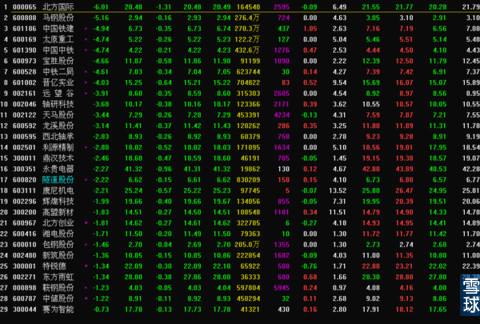
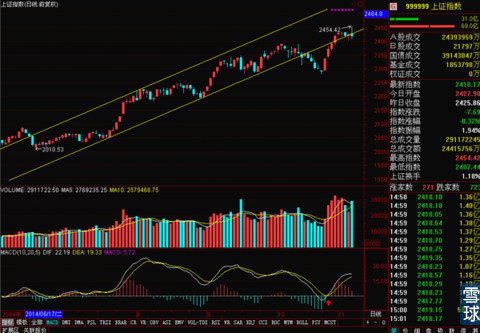
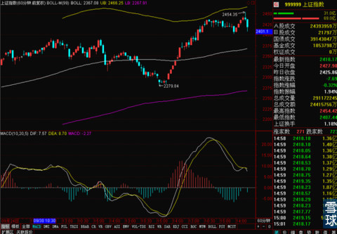

今天中午该更新的时候，正好人在外面有事，拿起手机和平板看了一下上午的走势。上午收盘收在2440，而且本周前四个交易日有三个收盘价都在2424这个我们期望的价位之上，本来是想用手机简单更新一下说本周基本上是站稳了2424，下午可以进行一点中长线加仓，我自己也打算下午银华锐进要是再次突破0.531这个周线BOLL中轨的价位，我就开仓买点做短线。但是打了几个字之后，总是隐隐约约感觉不那么得劲。也说不清楚是因为什么。后来合计一下还是把手机收起来没写。
结果下午看见大涨2454的时候，我还觉得可能是我多疑了，这是不是要顺势拿下2456这个周线BOLL上轨的节奏啊？回家是不是要总结一下为什么低估了这次上涨什么的？等我快3点钟到家一看就傻眼了，冲不上2456很正常，怎么最后这一下午时候，连2424都给丢了！！！
仔细看了一下新闻，原因下午是墨西哥突然通知说南车之前11月3日中标的高铁订单被取消了。加上之前南车和北车因为在海外业务压价竞争导致国务院出面要求两公司合并这些消息加在一起，这个事情实在是太热闹了。

这个事情可能背后的水比我们想象的要深得多得多，墨西哥可是美国后院啊！当年西方国家欺负中国，重要的一条就是路权问题，现在中国跑到墨西哥修铁路，这个事情本身就有很复杂的国际政治色彩，加上国家推动南北车合并，明显有悖于市场竞争这种行为，加上西门子等各方面的利益争夺。一时半会这个事情是说不清了。
但是对于大盘，我个人感觉本周主力的意图明显是打算通过金融类权重股高度影响指数，很有耐心的把指数做回到前期上升通道中去，并且是有意图本周站稳2424一带的，恰好昨天证监会站出来再次强调了沪港通的开通已经箭在弦上，正正好好适合今天拉升。但是高铁事件可能正好给了市场主力一个趁机再捞一把廉价筹码的机会。

但是好在上证指数30分钟的MA60还在，可能下周先降后升，估计暂时这个消息不会对大盘出现过度的冲击。
当时暂时相关消息太少，只能是猜测一下，超短线的技术面对这个突然下跌有点暂时失灵的情况。重点看看周末消息面怎么对冲这些不利消息吧！
PS.补充一下，上证60分钟线这个状态还是有些凶险，短线谨慎一点。但是也有可能在调整之后，出现新的建仓良机。

 |
今天中午该更新的时候，正好人在外SaiLv 2014-11-09 13:20:27 |
Copyright © 1996-2014 SINA Corporation All Rights Reserved.